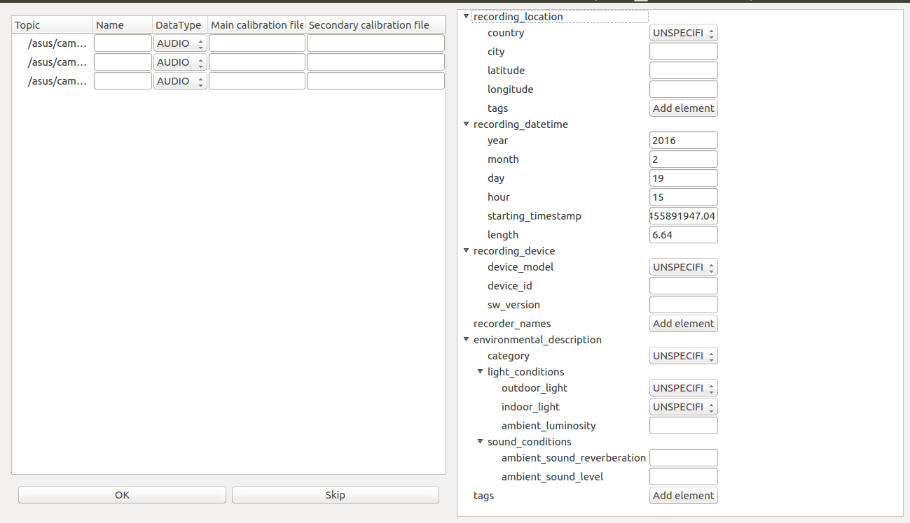
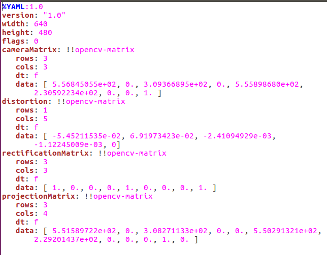
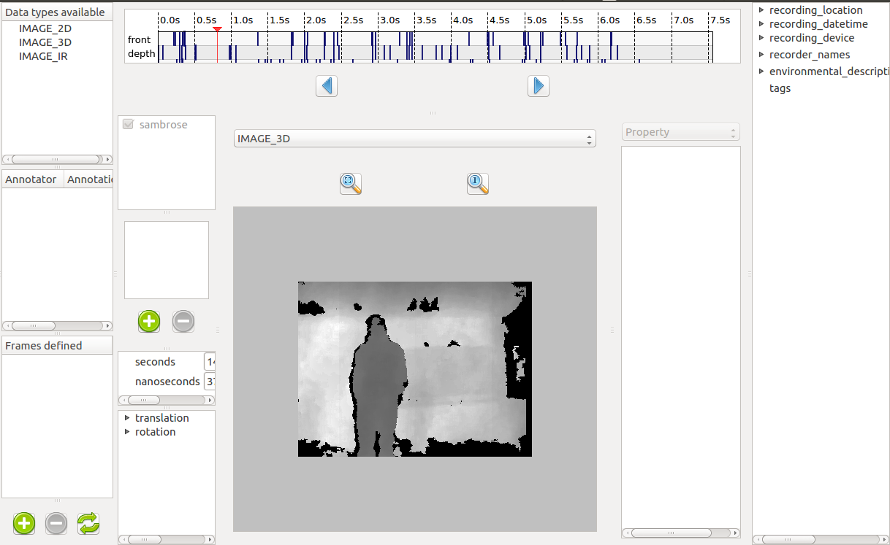

3. Advanced usage¶
Warning
This section describes features that have been made specifically for Aldebaran’s needs. They might not all be fully usable for more general purposes, even though they aim to be, in the future.
3.1. Create a dataset from a ROSbag¶
Previously, we saw how to create a dataset from a folder, using the graphical interface. However, there is another option, which is to extract data from a ROSbag file.
If you have no idea what a ROSbag is, then you can probably skip this section. Just know that ROSbags are a sort of archive files in which data is organized in different structures and dated.
If you are interested, you can have a look here. After that, I will assume you are familiar with ROS and its vocabulary.
To create a QiDataSet from a ROSbag, you need to have a ROS workspace sourced to begin with. Then you can run:
qidata extract <path/to/bag>
Warning
For now, the bag MUST have a /tf topic to be extracted. /tf is not shown in the topic list, but it is always used to compute the sensor position when the camera
Warning
Only bags recorded from an SBRE robot with naoqi_driver can actually be extracted.
You should then see something like this:
The right-panel should remind you something. It is the future context of the dataset. Thanks to the information already contained by the ROSbag, the timestamp-related information are already filled when the bag is opened. The rest is up to you!
On the left panel, you can select which topic you want to record. To extract data from a topic, you need to give it a name in the second column. An empty space means the topic will not be extracted.
You can then select the type of data it is (very useful to specify if the images are 2D, 3D, or stereo). Finally, the last two columns are here to specify a calibration file if the selected data is an image (if not, it is ignored). The second file is only used if the type is “IMAGE_STEREO”.
The file used for calibration must have a certain format. Once again, this is due to the way Nao and Pepper store their camera calibrations.
3.2. Streams and frames¶
The point of a dataset is to be used as an input for an algorithm. Depending on the algorithm and the way it works, the dataset will be different. We can separate the different types of datasets along two axis:
- Mono-modal VS multi-modal
- Unrelated frames VS Data streams
The first category is only a question of how many different data types the dataset offers. The second, however, is about the dependency of the different items towards time.
This topic will be more explained in the following pages of the documentation, but for now, it can be summarized like this:
| Unrelated frames | Data streams | |
|---|---|---|
| Mono-modal | Single type of files | One data stream |
| Multi-modal | Several type of files + QiDataFrames | Several data streams |
A “frame” describes a list of files that must be given together to a relevant algorithm. A “stream” is a mapping between a timestamp and a file and describe when a specific file must be given to an algorithm.
Note
Be aware that frames and streams are totally different. Frames gather files of different type, whereas streams gather files of the same type but with different datetime of occurence. However, as it is possible to obtain frames from the definition of several streams, it is never possible to define frames if streams are defined.
3.2.1. Defining frames¶
So you might be wondering how to define frames. Well that’s simple. You can create a frame by opening a dataset and then clicking the “+” button (number 4 on the image in the previous page). You will then be able to select several files that will become the components of your frame, which will appear in the frame section. That’s it
3.2.2. Defining streams¶
And to define streams ? Well, you can’t. Streams represent flows of data, such flows that usually come from a recording device. As a result, it seems useless for a human to be able to define manually some data streams. Those streams should be defined solely by the recording program.
For instance, streams are created out of ROS topics when creating a QiDataSet out of a ROSbag.
3.2.3. Visualizing streams¶
When frames are defined, they can be seen in the “Frames defined” area. What about streams ?
Well if streams are defined, the window is actually a little bit different. A new widget can be seen that shows on a timeline when your files are located. You can then click anywhere, and the most recent file will be opened for you to annotate it.
3.3. Extend possible device list¶
You might have notice that, in the context, there is a field to describe the device used to make the dataset. The only problem is that, to select a device as the dataset’s recorder, it needs to be stored in a specific list. The default one is defined here:
https://github.com/aldebaran/qidata_devices
So, what if your device is not listed ? There are three possibilities:
- My device is a public device
You can edit the list directly on github and make a PR. Once accepted, you can either wait for a new package to be generated or directly download and install it from source
- My device is private but I am the only one needing it
Same as above except that instead of making a PR, clone the repo, make your changes and install your modified version
- My device is private, but others, in a private organisation, need it
You will need to create a new python package, with your device(s) in it. You can find a template
here. Once created, install it:python setup.py sdist pip install dist/*and share the archive in dist/ to your organisation.
3.4. Create new annotation messages¶
Another thing you might have noticed, is that you cannot annotate anything. If you wish to annotate all trucks in an image, then you need to define a Truck message somewhere. But where is that ?
Same as above, there are three possibilities, which are very similar. You can first require to add a message in the qidata project and make a PR, or do the same without the PR, or make your own python package with your messages that you can share with your organisation.
To create a new annotation message, you can follow the documentation here, the only difference being you must replace
from strong_typing import Struct
class MyStruct(Struct):
...
by:
from qidata.metadata_objects import MetadataObject
class MyStruct(MetadataObject):
...
You can use this template
as a starter.